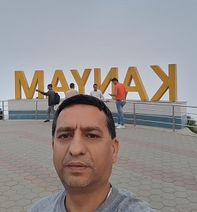
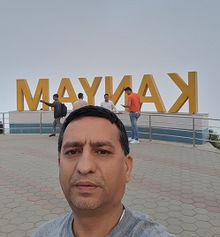

Dr. Ritu Raj Lamsal is an accomplished academic and professional with a distinguished educational and research background. He earned his Bachelor of Engineering in Electronics and Communication Engineering from the Institution of Engineers, India, in 1999. In 2006, he completed his Master of Technology in VLSI Design at Bharat University, Chennai, where he graduated as the top rank holder. Dr. Lamsal pursued his doctoral studies at the University of Malaga, Spain, culminating in a PhD with an outstanding thesis centered on IoT-based agricultural innovations.
Title: “IoT-Based Agricultural Innovations: Cost-effective platforms for smallholder farmers in Nepal and lower- and middle-income countries”
Supervisors: Prof. Dr. Pablo Otero Roth, Prof Dr. Francisco Coslado Aristizábal
University: University of Málaga, Malaga, Spain
Link: View Thesis
 
